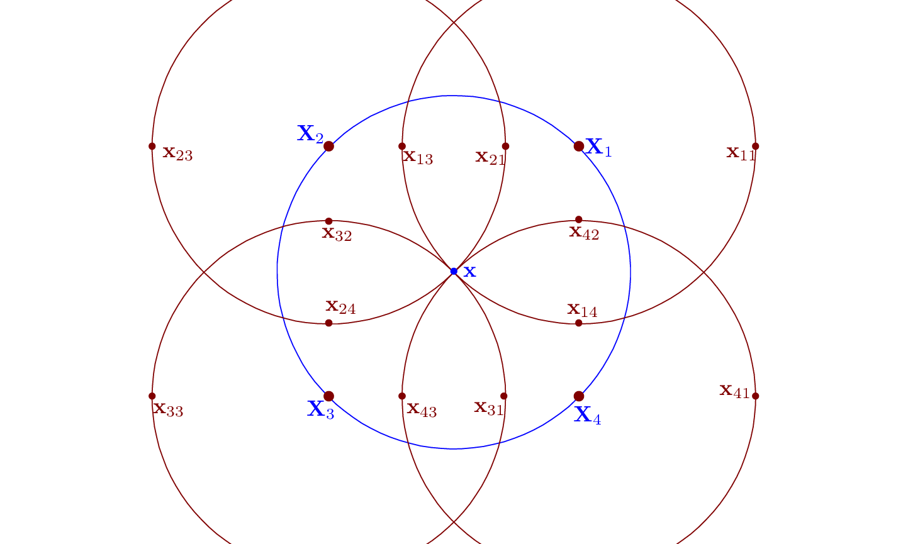
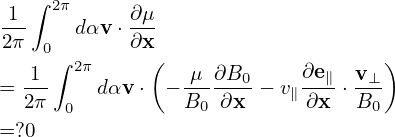
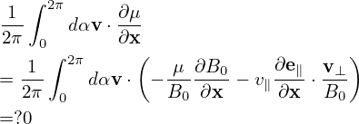

Using dv = v⊥dv⊥dv∥dα, the above integration is written as
|
| (249) |
and the definition of gyro-averaging (2π)−1 ∫ 02π(…)dα′, the above integration is written as
 | (250) |
Note that the gyro-averaging is performed in the guiding-center space and is performed by varying α′ while keeping guiding-center position X, v⊥, and v∥ constant.
Using the definition of δΦg (i.e., its relation with δΦ), i.e.,
|
| (251) |
where the particle location x is computed from the guiding-center location by
|
| (252) |
then A(x) is written as
Next, in order to perform the remaining velocity space integration, transform back to the particle coordinates (because the velocity integration is performed in the particle coordinates and is performed by keeping the particle coordinate x constant):
For notation ease, define|
| (254) |
where Δρij is a function of (x,v⊥,αi,αj′). Then Eq. (253) is written as
The guiding-center transform and its inverse involved in the above are illustrated in Fig. 3, which also shows how to evaluate the double gyro-angle integration using the discrete values of δΦij.

 ≈ ∑
i=1N1 ∑j=1N2δΦ(xij), where N1 = 4,N2 = 4 for the case
shown here.
≈ ∑
i=1N1 ∑j=1N2δΦ(xij), where N1 = 4,N2 = 4 for the case
shown here.The spatial points xij appearing in Eq. (3) are not necessarily grid points. Linear interpolations are used to express δΦ(xij) as linear combination of values of δΦ at grid-points.